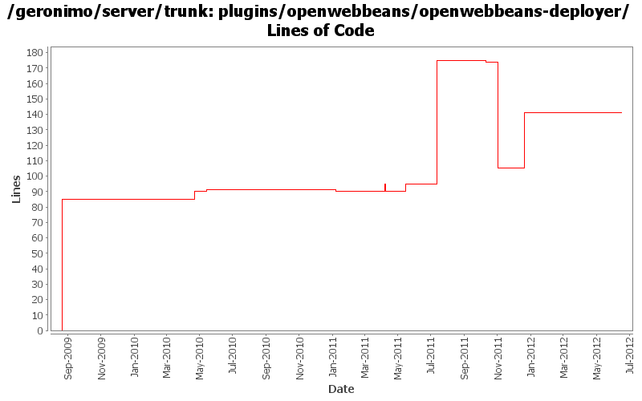

[root]/plugins/openwebbeans/openwebbeans-deployer
 src
(0 files, 0 lines)
src
(0 files, 0 lines)
 main
(0 files, 0 lines)
main
(0 files, 0 lines)
 history
(1 files, 34 lines)
history
(1 files, 34 lines)
 plan
(1 files, 99 lines)
plan
(1 files, 99 lines)

| Author | Changes | Lines of Code | Lines per Change |
|---|---|---|---|
| Totals | 16 (100.0%) | 263 (100.0%) | 16.4 |
| djencks | 4 (25.0%) | 127 (48.3%) | 31.7 |
| dblevins | 1 (6.3%) | 85 (32.3%) | 85.0 |
| genspring | 3 (18.8%) | 33 (12.5%) | 11.0 |
| xuhaihong | 4 (25.0%) | 14 (5.3%) | 3.5 |
| rickmcguire | 2 (12.5%) | 3 (1.1%) | 1.5 |
| xiaming | 1 (6.3%) | 1 (0.4%) | 1.0 |
| rwonly | 1 (6.3%) | 0 (0.0%) | 0.0 |
Update trunk version to 4.0.0-SNAPSHOT
1 lines of code changed in 1 file:
GERONIMO-6240 Modify configs so that they use features as the bootstrap, and fix a few compile and test errors. Servers build but do not fully start
36 lines of code changed in 1 file:
GERONIMO-6204 Decouple OpenWebBeans from web container
8 lines of code changed in 1 file:
some codes clean up
0 lines of code changed in 1 file:
More update for geronimo myfaces bundles
1 lines of code changed in 1 file:
GERONIMO-5050 Start of always using openejb for owb
83 lines of code changed in 1 file:
GERONIMO-5050 Use more explicit initialization of owb rather than relying on properties. Start integrating the needed changes
5 lines of code changed in 1 file:
recommit changes for GERONIMO-5893 to seperate the owb-jsf module out of default openwebbeans env.
5 lines of code changed in 1 file:
Revert the changes for GERONIMO-5893, it caused deployment failures
0 lines of code changed in 1 file:
GERONIMO-5893 Use a separate environment to host the JSF plug-in dependency, and only adds it to the environment if beans.xml is found
5 lines of code changed in 1 file:
[maven-release-plugin] prepare release 3.0-M2
1 lines of code changed in 1 file:
[maven-release-plugin] prepare branch 3.0-M2
2 lines of code changed in 1 file:
Cleanup some owb dependencies.
1 lines of code changed in 1 file:
GERONIMO-5290 fix many of the deprecation warnings from maven 3
3 lines of code changed in 1 file:
GERONIMO-5219 Java EE Injection annotation scanning for 299 beans, make the sample start to work.
27 lines of code changed in 1 file:
Beginning of an OpenWebBeans integration
85 lines of code changed in 1 file: